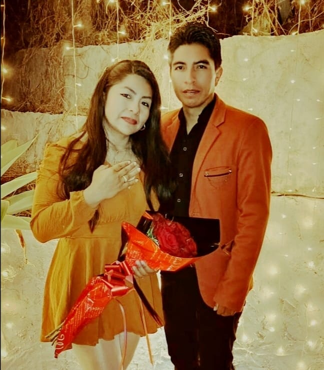
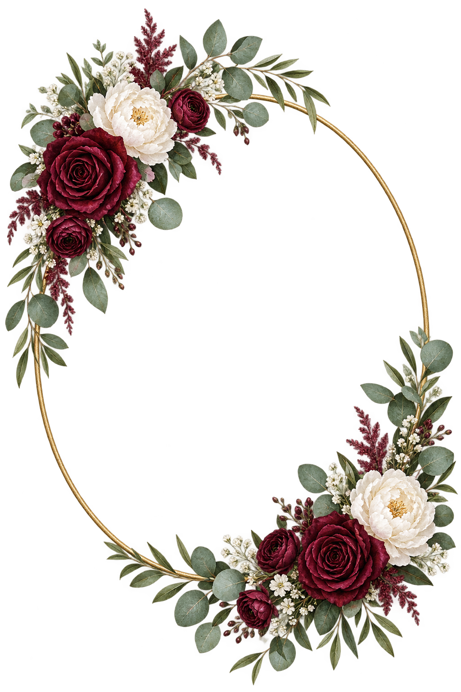

01
SÁBADO 19 · 13:00
Ceremonia religiosa
Templo Madre de la Divina Providencia
«El Hospicio»
Plaza Colón · Cochabamba
Cómo llegar a la iglesia ↗CON AMOR, PARA TI
19 · DICIEMBRE · 2026
Una historia de amor. Dos días para celebrarla.
NOS CASAMOS
19 de diciembre de 2026 · Cochabamba


Dios juntó nuestras manos y nos señaló el camino;
nosotros uniremos nuestras vidas
y lo recorreremos con amor y fe.
CON LA BENDICIÓN DE NUESTROS PADRES
Oscar Orellana V.
&
Marcelina Araoz O.
Tomas Flores A.
&
Martha Duran R. (†)
Con el amor que nos une, queremos invitarte a ser parte de este día tan esperado. Acompáñanos a comenzar un nuevo capítulo de nuestra historia.
El amor que hoy celebramos floreció con el cariño de quienes nos enseñaron a amar.
RESERVA ESTE DÍA
Sábado 19 de diciembre
Falta muy poquito para encontrarnos
Y porque un día no alcanza para tanta alegría…
¡La celebración continúa el domingo 20!
Elegirte hoy es una alegría; seguir eligiéndote cada día será nuestra promesa.
NUESTROS ENCUENTROS
SÁBADO 19 · 13:00
Templo Madre de la Divina Providencia
«El Hospicio»
Plaza Colón · Cochabamba
Cómo llegar a la iglesia ↗19 Y 20 DE DICIEMBRE
Complejo La Frontera
Final Av. Tadeo Haenke Oeste, Colcapirhua.
Próximo al balneario Azul Azul.
Ceremonia civil: domingo 20 · 16:00
Cómo llegar al local ↗De tu mano, cada camino se convierte en hogar.
NOS ACOMPAÑAN CON SU CARIÑO
Fredy Rimer Vidal Calvimontes
Rossemary Nunbela Garcia
Jose Victor Castellon Lopez
Maria Elza Arze de Castellón
Alfredo Fausto Corso Medinacelli
Norma Duran Ricalde
El matrimonio se construye con pequeños gestos, paciencia y un amor que se cuida cada día.
TU PRESENCIA ES PARTE DE NUESTRA ALEGRÍA
Confirma tu asistencia y cuéntanos quiénes te acompañarán.
Confirmar asistencia ♡La confirmación de asistencia estará disponible pronto.
¿Tienes alguna duda?
Escríbenos por WhatsApp ↗La felicidad crece cuando se comparte con las personas que llevamos en el corazón.